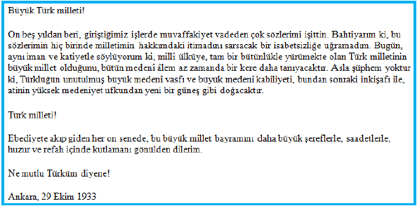

|
2.METİN VE GÖRÜNÜM DÜZENLEME ETİKETLERİ 2.1.Metin Düzenleme Etiketleri Html etiketleri kullanılarak metinler üzerinde görsel düzenlemeler yapılabilir. Bir metnin rengi, şekli, boyutu vs. üzerindeki değişiklik ve düzenlemelerin html etiketlerini kullanarak nasıl yapılacağına bakalım. 2.1.1.< HX >< HX > etiketleri, dokümana başlık eklemek için kullanılan etiketlerdir. < hx > etiketindeki “x” ifadesi, 1’den 6’ya kadar değer almaktadır. Sayı azaldıkça yazı büyüklüğünde artış olmaktadır. Buradaki < h1 >…< /h1 > en büyük başlığı, < h6 >…< /h6 > ise en küçük başlığı gösterir. 
2.1.2.< B > İstenilen metni kalın (bold) olarak yazmak için kullanılır. Kullanımı:< B >…< /B > şeklindedir. Örnek: Boş zaman yoktur boşa geçen zaman vardır. Tagore 
2.1.3.< U > İstenilen metni Altı çizili (underline) olarak yazmak için kullanılır. Kullanımı:< U >…< /U > şeklindedir. Örnek: Boş zaman yoktur boşa geçen zaman vardır. Tagore 
2.1.4.< I > İstenilen metni eğik(italik) olarak yazmak için kullanılır. Kullanımı:< I >…< /I > şeklindedir. Örnek: Boş zaman yoktur boşa geçen zaman vardır. Tagore 
2.1.5.< BR > Enter tuşu görevini görür. Bir alt satıra geçmek için kullanılır. Bu etiket kapatılmaz. Örnek:Ey Türk Gençliği! Birinci vazifen, Türk istiklâlini, Türk Cumhuriyetini, ilelebet, muhafaza ve müdafaa etmektir. 
2.1.6.< P > Paragraf oluşturmak için kullanılan etikettir. Kullanıldığı yerde yazıyı kesip bir satır boşluk bırakarak, metne satır başından devam edilmesini sağlar. Örnek:
 2.1.7.< FONT > < FONT > etiketi, kullanıldığı yerdeki metinlerin renk, boyut, yazı tipi gibi özelliklerini değiştirmek için kullanılır. Size, color ve face parametreleri ile kullanılabilir. 2.2. Görünüm Düzenleme Etiketleri2.2.1.< HR > < HR > etiketi sayfaya yatay çizgi çizmek için kullanılan etikettir. Bu etiket diğer etiketlerden farklı olarak kapatılmaz. Size, width ve align parametreleri mevcuttur. Size, çizilen çizginin kalınlığını belirlemek için kullanılır.Width, çizginin sayfadaki uzunluğunu belirlemek için kullanılır. Align, çizginin sayfada yer alacağı konumunu (sağa hizalı, sola hizalı, ortalanmış) belirlemek için kullanılır. Örnek: < hr size=“6” width=”200” align=“center” > |